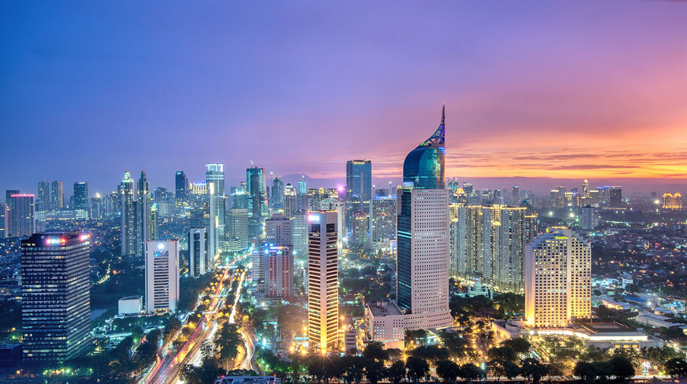

-
Bali
I was immersed in the exotic beauty of Bali, with its pristine beaches, lush greenery, and vibrant culture. From exploring ancient temples to surfing the waves, Bali gave me an unforgettable experience.

-
Jakarta
The dynamic and bustling city of Jakarta, where modern skyscrapers stand tall next to ancient temples and traditional markets. From the flavorful street food to the vibrant nightlife, Jakarta was an exciting and unique experience for me.
 -
Gili Islands
An escape to the tropical paradise of the Gili Islands, where crystal clear waters, white sandy beaches, and stunning coral reefs await. I enjoyed the laid-back island vibe, relaxed in a hammock, and indulged in fresh seafood while watching the spectacular sunsets over the ocean.

-
Surabaya
I explored the dynamic city of Surabaya, with its rich history, bustling streets, and delicious culinary scene. Visiting the famous House of Sampoerna, strolling along the colorful Chinatown, and savoring the local dish of Sate Klopo at one of the many street food stalls was nothing less than paradise.